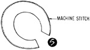

1952—How to Make Hats
by Ruby Carnahan
Stitched Casual Hat and Bag
Casual Hat and Bag

MATERIAL REQUIRED
- 3/4 yard of fabric
- 1 yard of foundation felt
- 1/4 yard of lining
- Ribbon headband
- 3 spools of thread for stitching
STITCHED CASUAL HAT AND BAG
Four piece crown pattern on page 113 can be used instead of six piece crown if desired. Any material can be used to make this hat and bag; wool, silk, velvet or cotton material. Shrink foundation felt before using.
CUTTING CASUAL HAT CROWN
Lay pattern for crown sections on felt. Draw a line around pattern on felt and cut out six sections. Lay these felt sections on fabric as pattern indicates. Baste around each section and cut out fabric.
STITCHING CROWN
(Illus. 1) Start rows of stitching at bottom of each section. Stitch to top of section and then down to bottom of section again, continue stitching row after row until section is entirely filled with stitching. Use machine foot to gage distance between rows of stitching. Fill each section with stitching before joining together.
(Illus. 2) Baste each section of crown together starting at top and basting down. Then stitch on machine and trim seams close on each section.
BLOCKING CROWN
Pull crown on correct headsize block wrong side out. Steam press seams open then steam crown smoothing out wrinkles and pulling crown down to fit block. Pin to block around bottom of crown. Let dry on block. (Illus. 3) Measure and mark depth and width crown is to be and run a basting thread around crown on these marks.
Mark back and front of crown. Increase or decrease brim pattern at back seam and lay brim pattern on felt. Mark around pattern on felt allowing 1/2" for seams and cut out felt. Lay felt on wrong side of fabric on the bias and baste felt and fabric together and cut out. Now lay fabric side of brim on right side of material on the bias, baste together (Illus. 4) and cut out.
STITCHING BRIM
(Illus. 5) Stitch all three pieces together around brim edge on machine. Trim seam and remove basting.
(Illus. 6) Open brim and join together in back, seaming top side of felt and fabric and facing side of fabrics together in one continuous seam.
(Illus. 7) Turn facing fabric over felt side of brim and baste around brim edge. Steam press brim. Stitch, starting 1/4" from edge of brim for first row of stitching and continue stitching row after row (Illus. 8) until headsize line is reached. Mark front of brim.
ASSEMBLING CROWN AND BRIM
(Illus. 9) Have crown on block and slip brim over crown. Match markings on crown and brim and pin brim to crown on basting line around crown. Make any adjustments necessary before stitching crown and brim together.
 (Illus. 10)
Trim off excess material inside headsize.
(Illus. 10)
Trim off excess material inside headsize.
LINING AND HEADBAND
Cut six crown sections of lining, join and stitch sections together. Steam press lining on block and slip inside crown and baste around headsize. Finish headsize with a swirled headband.